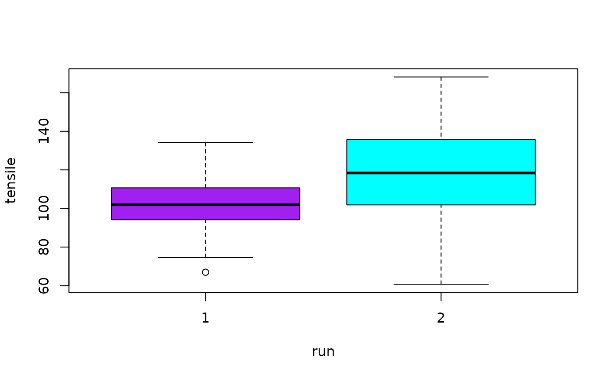

Data for Example 7.11
A data frame with 72 observations on the following 4 variables.
a numeric vector
a numeric vector
a numeric vector
a numeric vector
Kitchens, L. J. (2003) Basic Statistics and Data Analysis. Duxbury
str(Tensile)#> 'data.frame': 72 obs. of 4 variables: #> $ Run.1 : num 98.4 109.6 110.1 107.6 74.6 ... #> $ Run.2 : num 168 115 124 94 128 ... #> $ Tensile: num 98.4 109.6 110.1 107.6 74.6 ... #> $ Run : int 1 1 1 1 1 1 1 1 1 1 ...attach(Tensile)#> #> #>boxplot(Run.1,Run.2,names=c("Run 1","Run 2"),col=c("red","Blue"))boxplot(Tensile~Run,names=c("Run 1","Run 2"),col=c("red","Blue"))t.test(Tensile~Run)#> #> Welch Two Sample t-test #> #> data: Tensile by Run #> t = -3.4505, df = 64.136, p-value = 0.0009946 #> alternative hypothesis: true difference in means is not equal to 0 #> 95 percent confidence interval: #> -25.029593 -6.674665 #> sample estimates: #> mean in group 1 mean in group 2 #> 102.3346 118.1868 #>t.test(Run.1,Run.2)#> #> Welch Two Sample t-test #> #> data: Run.1 and Run.2 #> t = -3.4505, df = 64.136, p-value = 0.0009946 #> alternative hypothesis: true difference in means is not equal to 0 #> 95 percent confidence interval: #> -25.029593 -6.674665 #> sample estimates: #> mean of x mean of y #> 102.3346 118.1868 #>detach(Tensile)